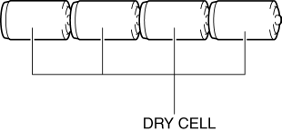
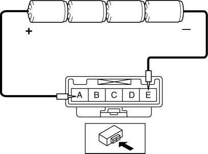
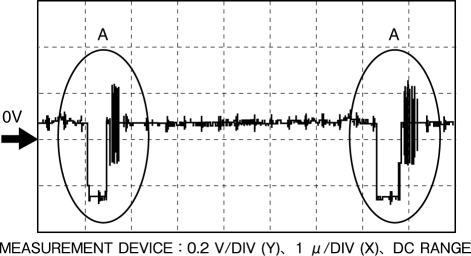

< Previous
Next >
2014 -
Mazda6 -
Body and Accessories
REAR MOUNT CAMERA INSPECTION
1. Disconnect the negative battery cable. (See NEGATIVE BATTERY CABLE DISCONNECTION/CONNECTION [SKYACTIV-G 2.5].)
2. Remove the following parts: a. Trunk lid recess (See TRUNK LID RECESS REMOVAL/INSTALLATION.)
b. Trunk lid trim (See TRUNK LID TRIM REMOVAL/INSTALLATION.)
c. Rear mount camera (See REAR MOUNT CAMERA REMOVAL/INSTALLATION.)
3. Prepare four dry cell batteries (1.5 V)
4. Connect the four dry cell batteries in a series.

5. Connect the positive pole of the dry cell battery to rear mount camera terminal A, and the negative pole to terminal E.

6. With the cell batteries being connected, measure the waveform between rear mount camera terminal D and terminal C.
7. Verify that waveform A shown in the figure is displayed two times or more.

8. If the voltage is not as shown in the figure, replace the rear mount camera.
< Previous
Next >
© 2012 Mazda North American Operations, U.S.A.